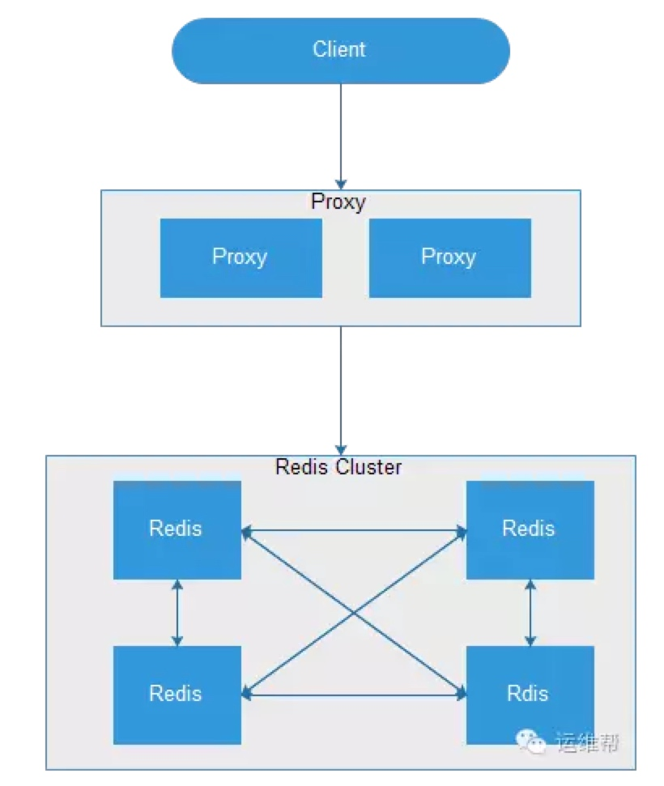
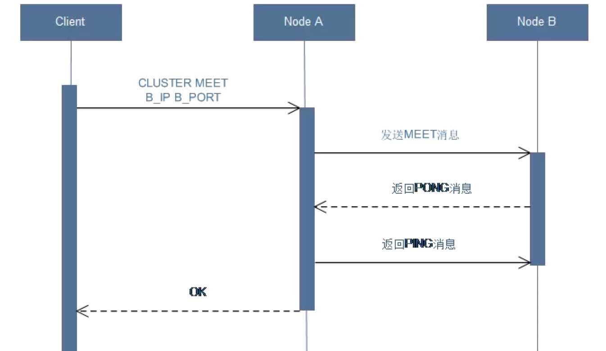
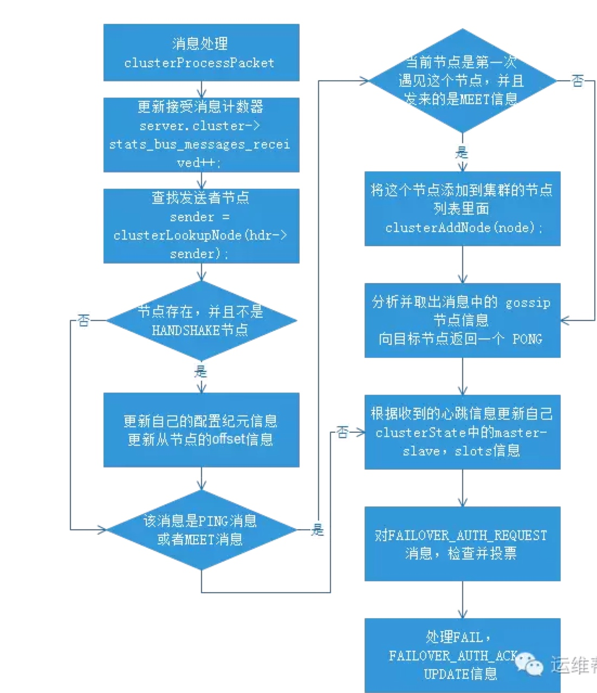

一、 简介

Redis Cluster是一个高性能高可用的分布式系统。由多个Redis实例组成的整体，数据按照Slot存储分布在多个Redis实例上，通过Gossip协议来进行节点之间通信。
Redis Cluster功能特点如下：
* 所有的节点相互连接 * 集群消息通信通过集群总线通信，，集群总线端口大小为客户端服务端口+10000，这个10000是固定值 * 节点与节点之间通过二进制协议进行通信 * 客户端和集群节点之间通信和通常一样，通过文本协议进行 * 集群节点不会代理查询 * 数据按照Slot存储分布在多个Redis实例上 * 集群节点挂掉会自动故障转移 * 可以相对平滑扩/缩容节点
二、 集群通信
2.1 CLUSTER MEET

需要组建一个真正的可工作的集群，我们必须将各个独立的节点连接起来，构成一个包含多个节点的集群。
连接各个节点的工作使用CLUSTER MEET命令来完成。
CLUSTER MEET
CLUSTERMEET命令实现：
- 节点 A 会为节点 B 创建一个 clusterNode 结构，并将该结构添加到自己的 clusterState.nodes 字典里面。
- 节点A根据CLUSTER MEET命令给定的IP地址和端口号，向节点B发送一条MEET消息。
- 节点B接收到节点A发送的MEET消息，节点B会为节点A创建一个clusterNode结构，并将该结构添加到自己的clusterState.nodes字典里面。
- 节点B向节点A返回一条PONG消息。
- 节点A将受到节点B返回的PONG消息，通过这条PONG消息节点A可以知道节点B已经成功的接收了自己发送的MEET消息。
- 之后，节点A将向节点B返回一条PING消息。
- 节点B将接收到的节点A返回的PING消息，通过这条PING消息节点B可以知道节点A已经成功的接收到了自己返回的PONG消息，握手完成。
- 之后，节点A会将节点B的信息通过Gossip协议传播给集群中的其他节点，让其他节点也与节点B进行握手，最终，经过一段时间后，节点B会被集群中的所有节点认识。
2.2 集群消息处理 clusterProcessPacket
- 更新接收消息计数器
- 查找发送者节点并且不是handshake节点
- 更新自己的epoch和slave的offset信息
- 处理MEET消息，使加入集群
- 从goosip中发现未知节点，发起handshake
- 对PING，MEET回复PONG
- 根据收到的心跳信息更新自己clusterState中的master-slave，slots信息
- 对FAILOVER_AUTH_REQUEST消息，检查并投票
- 处理FAIL，FAILOVER_AUTH_ACK，UPDATE信息
